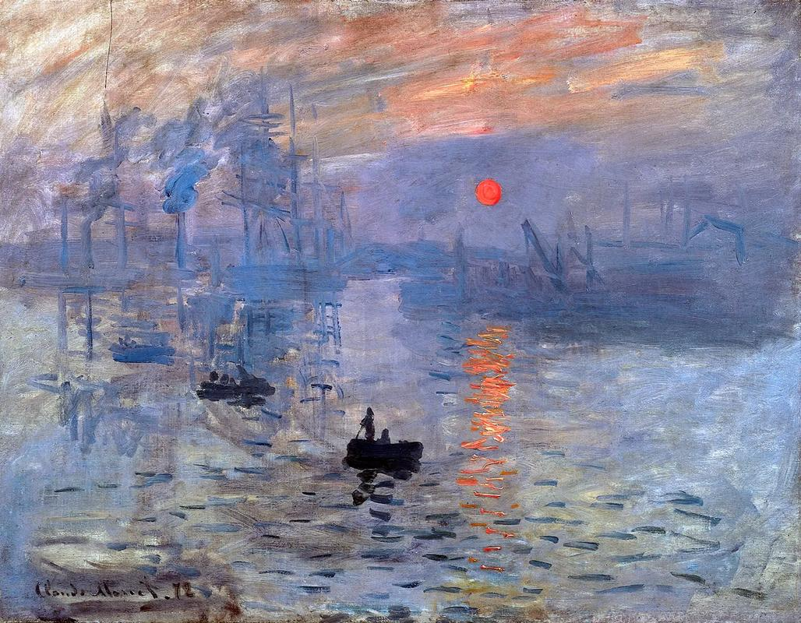

| 返回 | 日出印象 | 上一作品 | 下一作品 |
|  |
《日出·印象》（英语：Impression Sunrise；法语：Impression,Soleil levant）是法国印象派画家克劳德·莫奈于1872年在勒阿弗尔港口创作的一幅油画。该画描绘了晨雾笼罩中的日出港口景象，用美妙的光的变幻与运动展现了迷人景色，以及画家用轻快跳跃的笔触刻画了光在宽阔的海面上反射与颤动的生动景象。现藏于巴黎马尔莫丹艺术馆。 该幅作品突破了传统题材和构图的限制，完全以视觉经验的感知为出发点，侧重表现光线氛围中变幻无穷的外观，是莫奈画作中最典型的一幅，也是日后最具声誉的经典画作，是印象画派的开山之作。 画面描绘的是透过薄雾观望勒阿佛尔港口日出时的景象，经过晨雾的折射，一抹圆形的红日在昏暗的景象中极其突出，在水面上形成随波颤抖的暖光，急促的条形笔触与光线投影相互呼应，给人以深刻印象。莫奈借用长短不一的笔触描绘出水面上泛起的波光，三只小船在朦胧的雾气中若隐若现，远处依稀可见的工厂烟囱、吊车等物象琵是利用隐约的笔触表现，将日出时刻法国海港域市的神奇呈现在人们面前。 在艺术观点上，反对当时占正统地位的古典学院派，反对日益落入俗套、矫揉造作的浪漫主义绘画。 作为一种美术思潮，印象主义绘画在世界美术史上具有重要地位，它推动了以后美术技法的革新与观念的转变，对欧美、日本乃至中国的画家产生过重要影响。 1874年4月，在莫奈和德加的倡议和奔走下，“独立派”画家们在巴黎摄影家纳达尔的工作室举办了第一次自己的展览会。以莫奈、雷诺阿、西斯莱、毕沙罗、德加为中心，包括布丹、塞尚在内的30个画家的165件作品品参加了展出。《日出·印象》也在该展览中首次展出。 |